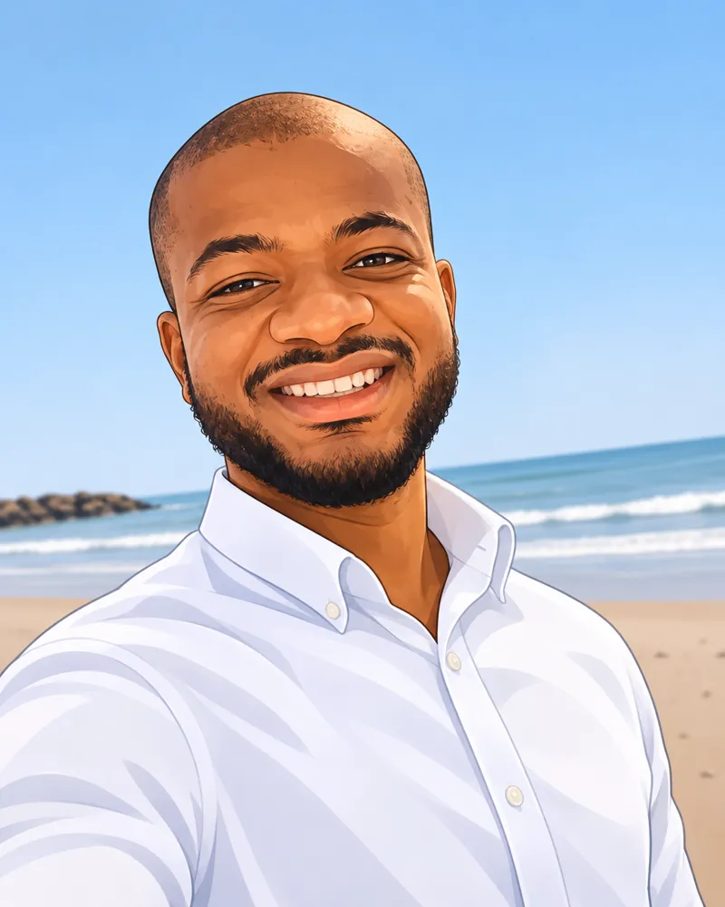

Off-the-Jaw Tactile Sensing System for Tissue Stiffness and Thickness Assessment in Minimally Invasive Surgery
A sensing system developed for tissue assessment in minimally invasive surgical applications.
Read article ↗Ph.D. Candidate · Biomedical Engineering
I design intelligent microdevices and explore AI-driven microrobotics, acoustofluidics, and medical-device translation at Penn State.
I build tiny devices, explore intelligent systems, and work on biomedical ideas that could make a difference.
I’m a Biomedical Engineering Ph.D. candidate at Penn State, working with Prof. Igor S. Aronson. My research combines deep reinforcement learning, microfluidic device design, and experimental approaches to biomedical systems.
I also co-lead translational work on a bioresorbable hemostatic foam, bridging preclinical validation, customer discovery, and medical-device development.

Three connected areas of biomedical engineering research—from intelligent devices to clinically motivated translation.
Magnetic microrobotics, reinforcement learning, and acoustofluidic design.
Image-guided microfluidics and data-efficient biomedical classification.
Hemostatic materials, experimental validation, and medical-device translation.
Peer-reviewed research in microfluidics, medical-device sensing, and data-driven biological science.
A sensing system developed for tissue assessment in minimally invasive surgical applications.
Read article ↗Dielectrophoretic assessment of red blood cell deformability in type 2 diabetes research.
Read article ↗Genome–environment relationships investigated using environmental observations and biological data.
Read article ↗A few recent highlights from research, education, and technology translation.
Presented a late-breaking poster on reinforcement learning for chiral magnetic micropropeller cargo transport.
Explore milestones ↗Penn State-supported team funding for further development and validation of bioresorbable hemostatic foam.
Grant details ↗Completed a master's thesis focused on simulation-guided silicon–glass acoustofluidic device design.
Read milestone ↗Engineering experience across Penn State, NYU Abu Dhabi, and CERN, spanning computation, biomedical devices, and translation.
Doctoral research combining modeling, machine learning, and microdevice development.
Experience in microdevices, tactile sensing, and bioengineering.
Summer research focused on engineering analysis and robotics applications.